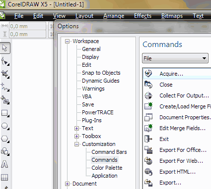
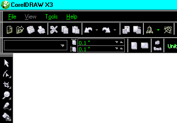

Собственно высказываемся, чего бы хотелось увидеть в CorelDRAW X6. :)
Добрый_ХАМ / 18.03.2010, 18:05
Санчо, ну никак... :) Распишу подробно: подвожу курсор к кнопке... Просто так она не вытаскивается. Щелкаю на мелкий треугольник в ПНУ (правый нижний угол) этой кнопки. Выпадает список инструментов спрятанных под этой кнопкой. Хватаю за пунктирную линию тащу в рабочее пространство. Получаю новую панельку с этим набором инструментов и кнопкой выключения, но изначальная кнопка остаётся на месте! 8-) Что не так делаю?
Ё-маё!!! Да кто-ж знал, что всё сказанное тобой выше, справедливо только при включённом окне Options, и включенной вкладке Comмands в нём! Во попрятали опцию, фиг найдёшь! Прям "пасхальные яйца" каие-то Да. Именно про это я и говорил. Спасибо, Санчо! Ну раз этот вопрос ПОЛНОСТЬЮ решён, можно наверное подтереть лишние наши сообщения. Оставить моё первое и твоё последнее, да бы топик не засорять. Только вот скажи, ты-то откуда об этом узнал? 8-) Я б, ни в жись не догадался! Почёт тебе! :)
Добрый_ХАМ / 18.03.2010, 22:11
А программный итерфейс можно темнее сделать? Менял в Windows, но в Corel, только несколько элементов меняются, остальное по прежнему остаётся. Может тож, где-то спрятали? ;D
Sancho / 18.03.2010, 22:45/22:55
Добрый_ХАМ, откуда узнал? да это как бы много кто знает. Только там и настраивается интерфейс. Всё таки точно, надо писать про настройку интерфейса.
А по поводу цвета интерфейса - всё от винды зависит. Вот для примера "вырви глаз":
Ну что интерфейс там, в опциях меняется, эт понятно. Но что кнопки с дефолтного тулбара можно только при этом включённом окне вытащить, это просто квест какой, млин! А вот с виндой ещё сейчас поэкспериментирую.... Да. Целиком фэйс красится тока в классическом стиле оформления Windows. В остальных - нет. Во всяком случае в XP так. Ну а что-б опробовать и понять "а оно мне, ваще, надо?" этого хватает. Очередной большой пасиб!
lurex / 22.03.2010, 00:09
1. Хотелось бы вернуть редактирование узелков растровой картинки двойным щелчком левой кнопки мыши (как в старых версиях) 2. Включить возможность замены цвета заливки и лини одновременно через replace object
kosttan / 25.03.2010, 20:21
Неплохо бы в Х6 версии сделать инструмент деформации WARP, как в Илле. Еще. В 11 версии Корела была такая штука, рисешь кривую, затем выделяешь несколько узлов, тянешь их с нажатой правой клавишей, отпускаешь и ... ОНА (кривая) КОПИРУЕТСЯ!!!. Пробовал во всех других версиях, нет, не работает.
Добавлено (25.03.2010, 20:21) --------------------------------------------- Да, и еще вопрос, не по теме, но всетаки. Как поставить макросы в Х5 копирование в Илл и Фотошоп и Select Same по моему он так называется.
Des425 / 26.03.2010, 13:51
Вместо WARP в Corel, есть эффект Envelope tool. А для перемещения узлов, чтоб при этом копировалась кривая, появился докер Object Coordinates (хотя, то что ты описал, в какой то степени, было бы удобней)
borderman / 27.03.2010, 06:13
Работаю с программой с 3-й версии. Начиная с 4-ой растровый редактор (Photopaint, кажется?), не устанавливаю. Может быть, имеет смысл разделить пакет (и удешевить!)? Ведь, при всем уважении к Corel, коммерческий растр лучше делать в Photoshop`e. А кому "для дома, для семьи" - продавать отдельно. Насчет идеи фиксации направляющих на делениях линейки (с шагом в один мм, как сделано в Photoshop`e) - всецело поддерживаю: удобно, быстро. Вот ситуация: приносят навороченный файл со всем джентльменским набором: бленд, прозрачность, контейнеры, RGB-CMYK-Pantone в заливках и контурах. Требуется это дело привести в божеский вид для печати в один Pantone, например, синий. Перевожу с помощью "найти и заменить" или вручную. В итоге, с виду все нормально. Смотрю в Doc. info, а там что-то еще осталось. Где-то внизу, под видимыми объектами, в группах или сливается с синим Pantone, а атрибуты цвета неизвестны. Если эти какашки мелкие, то даже в окне Separation print их не видно, чтобы найти и уничтожить. Если есть и белые заливки, то поиск CMYK-объектов может довести до истерики и кровавых мозолей. Как бы придумать что-то вроде системы "свой-чужой", потому что в данном случае "родные" CMYK-объекты как раз "чужие"?.

Всё таки точно, надо писать про настройку интерфейса.
А по поводу цвета интерфейса - всё от винды зависит. Вот для примера "вырви глаз":

2. Включить возможность замены цвета заливки и лини одновременно через replace object
Еще. В 11 версии Корела была такая штука, рисешь кривую, затем выделяешь несколько узлов, тянешь их с нажатой правой клавишей, отпускаешь и ...
ОНА (кривая) КОПИРУЕТСЯ!!!. Пробовал во всех других версиях, нет, не работает.
Добавлено (25.03.2010, 20:21)
---------------------------------------------
Да, и еще вопрос, не по теме, но всетаки.
Как поставить макросы в Х5 копирование в Илл и Фотошоп и Select Same по моему он так называется.
А для перемещения узлов, чтоб при этом копировалась кривая, появился докер Object Coordinates (хотя, то что ты описал, в какой то степени, было бы удобней)
Вот ситуация: приносят навороченный файл со всем джентльменским набором: бленд, прозрачность, контейнеры, RGB-CMYK-Pantone в заливках и контурах. Требуется это дело привести в божеский вид для печати в один Pantone, например, синий. Перевожу с помощью "найти и заменить" или вручную. В итоге, с виду все нормально. Смотрю в Doc. info, а там что-то еще осталось. Где-то внизу, под видимыми объектами, в группах или сливается с синим Pantone, а атрибуты цвета неизвестны. Если эти какашки мелкие, то даже в окне Separation print их не видно, чтобы найти и уничтожить. Если есть и белые заливки, то поиск CMYK-объектов может довести до истерики и кровавых мозолей. Как бы придумать что-то вроде системы "свой-чужой", потому что в данном случае "родные" CMYK-объекты как раз "чужие"?.
Страницы